$A\approx14.70$ square units. Round after finding the exact value.
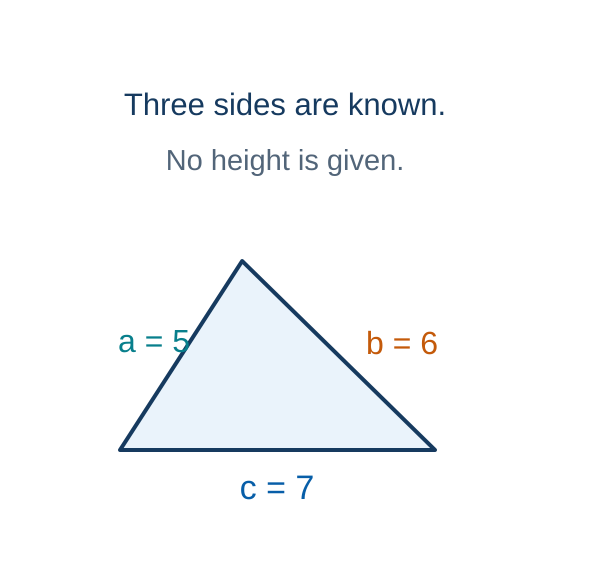
The semiperimeter is half the perimeter.
Model · 2.0 minSource: Authored
Right Triangle: Height Before Area
A right triangle has base 8 and hypotenuse 17 units. Find its perpendicular height, then its area.
1
The 17-unit side is opposite the right angle, so it is the hypotenuse.
2
$h^2+8^2=17^2$, so $h^2=289-64=225$.
3
$h=\sqrt{225}=15$ units. A length is positive.
4
$A=\tfrac12(8)(15)=60$ square units.
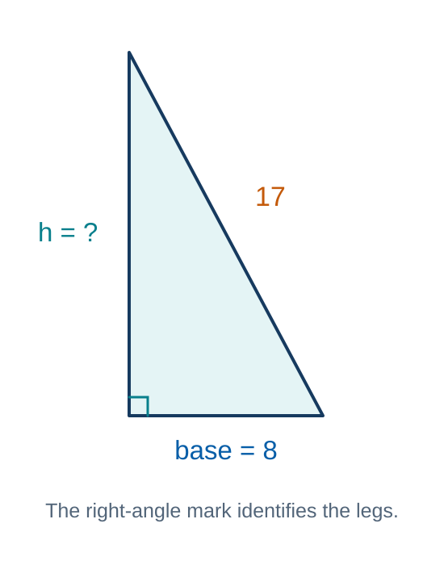
Find the missing leg before using the area formula.
Model · 1.5 minSource: Authored
Triangle Area Practice
Student practice
Triangle 1 has sides 7, 8, and 9. Find its area using Heron’s formula.
Triangle 2 has base 9 and hypotenuse 15. Find its perpendicular height with $a^2+b^2=c^2$, then its area.
Feedback and solution
$s=12$, so $A=\sqrt{12(5)(4)(3)}=12\sqrt5\approx26.8$ square units.
$h=\sqrt{15^2-9^2}=12$ units, so $A=\tfrac12(9)(12)=54.0$ square units.
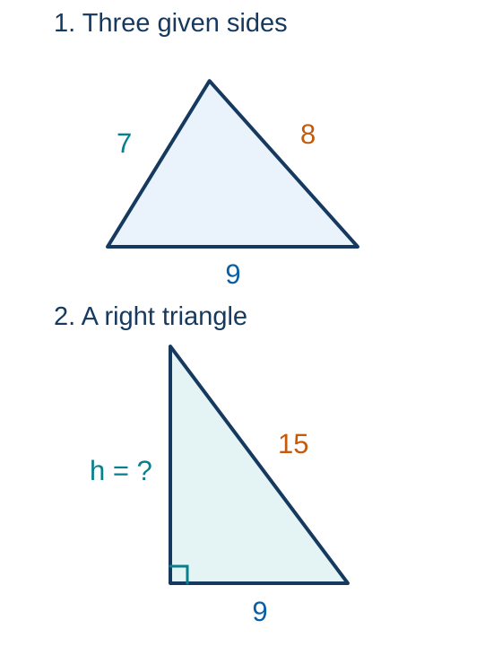
Lengths use the same units within each triangle.
Practice · 4.0 minSource: 35, 36
Error Analysis: Slanted Side or Height?
Student practice
A student uses $A=\tfrac12(10)(13)=65$. Identify the error and correct the area.
Can $a^2+b^2=c^2$ be used for this whole triangle? Explain.
Feedback and solution
The 13-unit side is slanted. Use $h=12$: $A=\tfrac12(10)(12)=60$ square units.
The whole triangle is obtuse. Apply the Pythagorean theorem only to the small right triangle formed by the altitude.
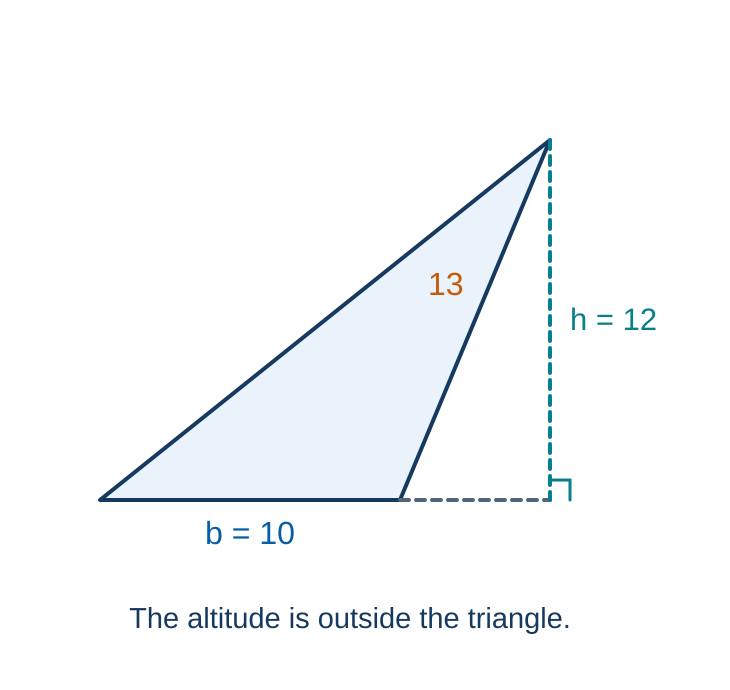
The perpendicular height can lie outside an obtuse triangle.
Feedback · 1.0 minSource: 37, 38
Pacing checkpoint
Which Triangle Area Method?
Student practice
Choose an appropriate method for each of the three triangles shown. Find the exact areas in square units.
Feedback and solution
Triangle 1: $A=\tfrac12(14)(5)=35$.
Triangle 2: $A=6^2\sqrt3/4=9\sqrt3$.
Triangle 3: $s=8$ and $A=\sqrt{8(3)(3)(2)}=12$. Alternatively, find height 4 and use $A=bh/2$.
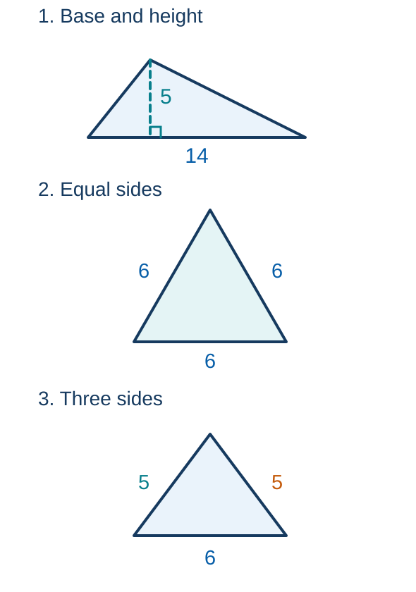
The problem gives measurements, so you choose the method.
Synthesize · 2.5 minSource: 39, 40
Corresponding Vertices and Sides
Predict first
How does vertex order prevent a similarity proportion from using mismatched sides?
Commit to a response before discussion.
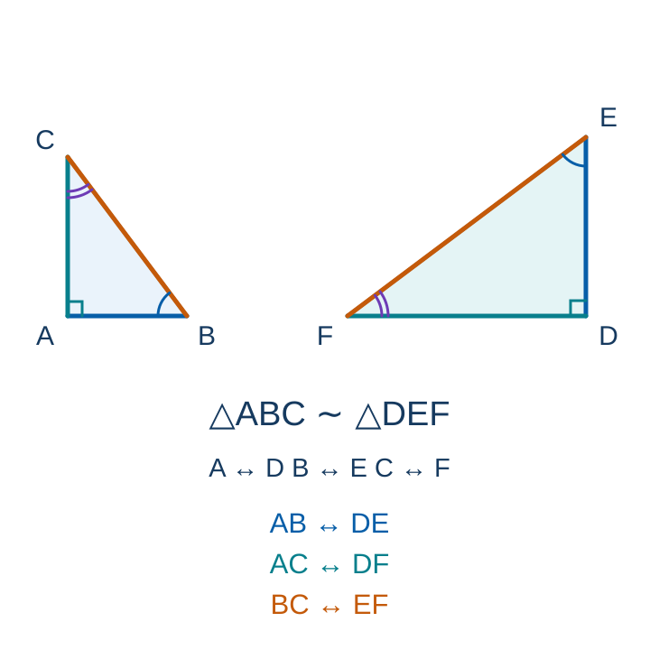
Rotation preserves the matching angles and sides.
Activate · 0.5 minSource: Authored
Similarity and Navigation Angles
Concept
Corresponding vertices must remain in the same order.
DMS conversion uses 60 minutes per degree and 60 seconds per minute.
One minute of latitude is approximately one nautical mile. One nautical mile is exactly 1852 m.
Example: $5$ nmi $=5(1852)=9260$ m $=9.26$ km.
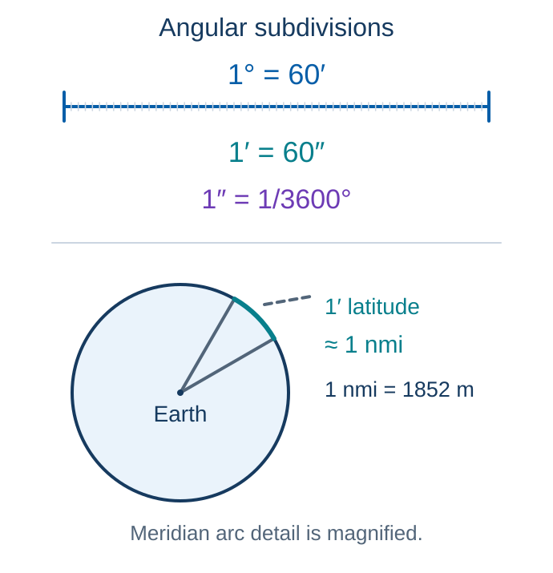
Primes denote angular minutes and seconds.
Explain · 2.0 minSource: 42, 43
Similarity Proportions and DMS
Match the sides to solve $6/9=10/x$. Convert $45^\circ22'18''$ to decimal degrees, rounded to six decimal places.
$6x=90$, so $x=15$.
Add $45+22/60+18/3600$ to obtain approximately $45.371667^\circ$.
Corresponding sides stay in the same order and DMS uses factors of 60.
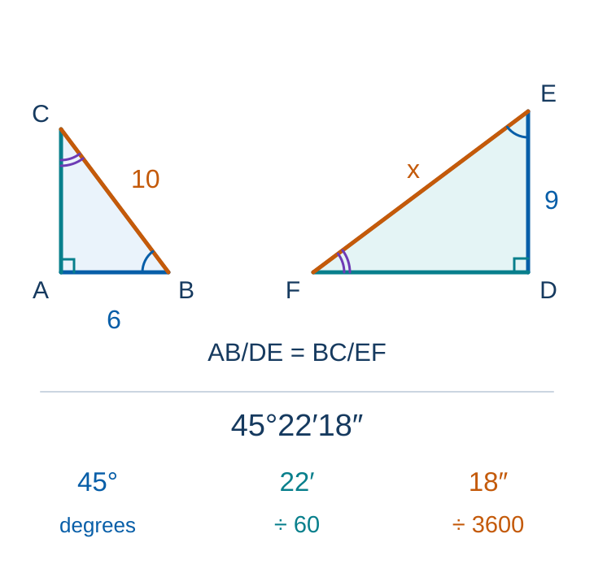
Match sides by vertex order. Convert each angular part.
Model · 2.0 minSource: 44, 45
Similar Triangles: Angles and Shrinking
For $\triangle ABC\sim\triangle DEF$, find $\angle D$, $\angle F$, $DF$, and $EF$. Round angles to 0.1° and lengths to 0.01 unit.
$\angle D\approx59.5^\circ$. The third angle is $180-59.5-53.1=67.4^\circ$, so $\angle F\approx67.4^\circ$.
The scale from ABC to DEF is $k=DE/AB=10/15=2/3<1$.
$DF=13(2/3)=26/3\approx8.67$ units.
$EF=14(2/3)=28/3\approx9.33$ units. Apply the same factor to both sides.
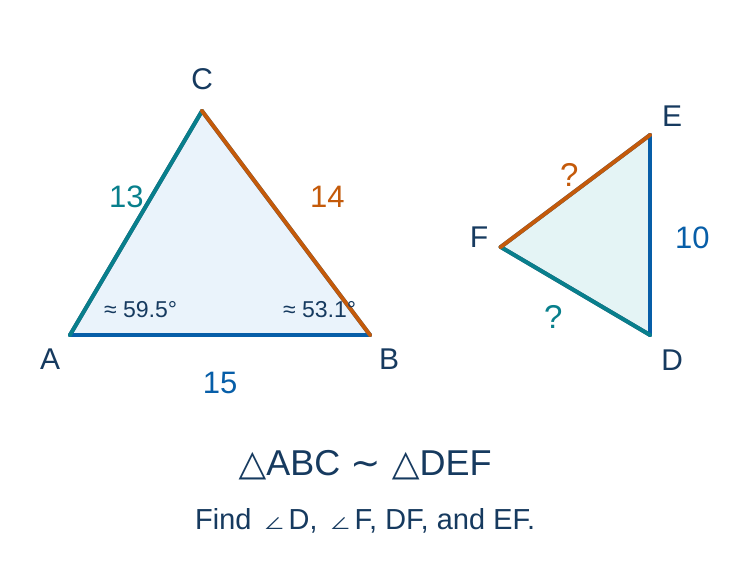
The matching target sides are shorter by the same factor.
Model · 2.5 minSource: Authored
Decimal Degrees to DMS: Successive Remainders
Convert $135.721^\circ$ to DMS. Keep seconds to one decimal place.
1
The whole degrees are $135$. The fractional degree part is $0.721$.
2
$0.721(60)=43.26$: keep $43$ minutes and the remainder $0.26$.
3
$0.26(60)=15.6$ seconds.
4
$135.721^\circ=135^\circ43'15.6''$.
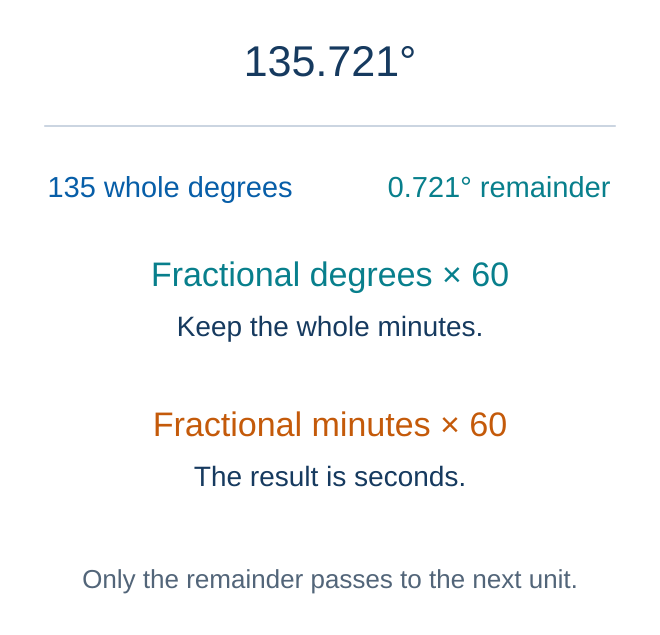
Multiply only the fractional remainder at each stage.
Model · 1.5 minSource: Authored
Scale Factor and Decimal Degrees
Student practice
Convert $73.625^\circ$ to DMS. A larger similar triangle has scale factor $3/2$ from a smaller triangle whose corresponding side is 14; find the larger side.
Feedback and solution
$0.625(60)=37.5$: keep $37'$ and convert the remainder, $0.5(60)=30''$.
$73.625^\circ=73^\circ37'30''$.
The larger side is $14(3/2)=21$ units.
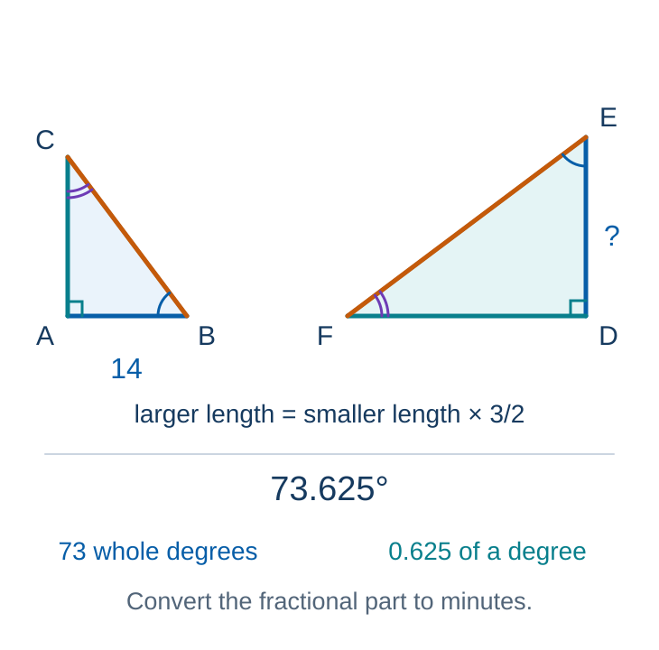
Apply the scale factor to corresponding lengths.
Practice · 2.0 minSource: 46, 47
Error Analysis: DMS and Correspondence
Error analysis
A student reports $0.5^\circ$ as $0^\circ50'$. Correct and explain the conversion.
For $\triangle ABC\sim\triangle DEF$, correct $AB/DE=EF/BC$.
Feedback and solution
$0.5(60)=30$, giving $0^\circ30'00''$.
$AB/DE=BC/EF$. Keep the same triangle in each numerator.
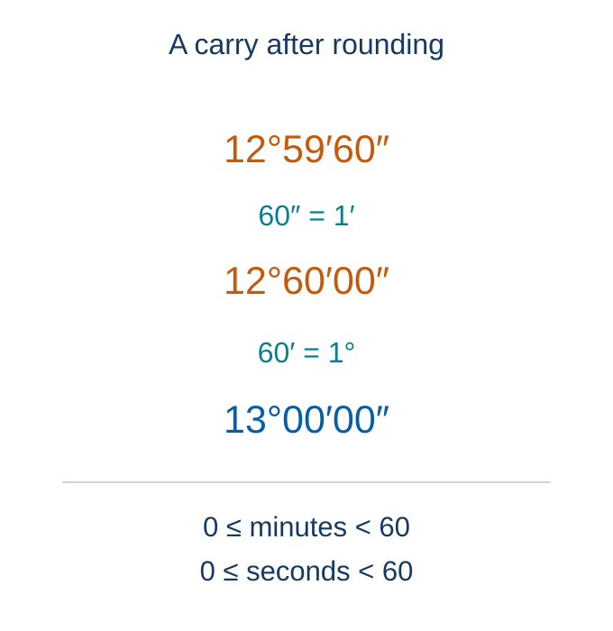
Carry seconds into minutes, then minutes into degrees.
Feedback · 1.5 minSource: 49, 50
Pacing checkpoint
Quiz 7 Practice: Similarity and DMS
Student practice
Use $k$ for the scale from ABC to DEF. Find $k$, $\angle E$, $\angle F$, $DF$, and $EF$ (angles to 0.1°).
Convert $120^\circ48'50''$ to decimal degrees (six decimal places).
Feedback and solution
Angles: $\angle E\approx22.6^\circ$ and $\angle F\approx180-90-22.6=67.4^\circ$.
Scale: $k=21/12=7/4$.
$DF=5k=8.75$, $EF=13k=22.75$ units.
Degrees: $120+48/60+50/3600$ gives approximately $120.813889^\circ$.
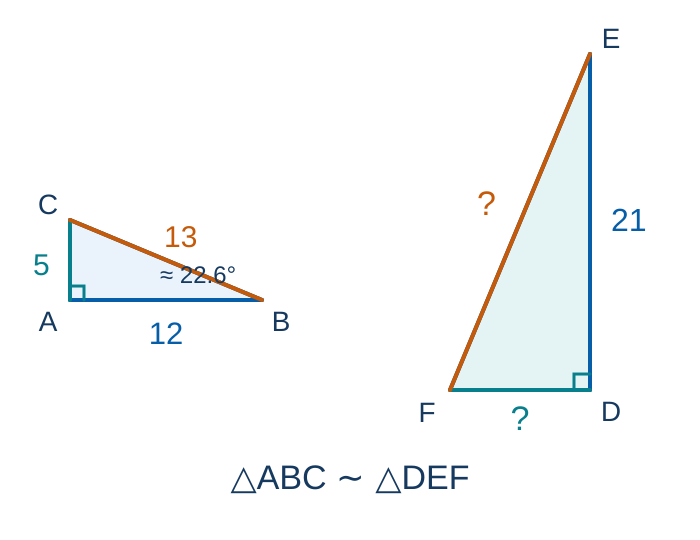
Determine the scale from the corresponding given sides.
Synthesize · 3.0 minSource: 51, 52
Final Exit: Area and Navigation
Student practice
Find the area of a trapezoid with bases 8 m and 14 m and perpendicular height 5 m. State which measurement must be perpendicular.
A ship moves north by $6'$ of latitude. Estimate the distance in nautical miles and kilometers.
Record one skill to review before Quiz 7.
Feedback and solution
$A=\tfrac12(8+14)(5)=55$ square meters. The height is perpendicular to both parallel bases.
The distance is approximately $6$ nmi. This is approximately $6(1.852)=11.112$ km, or about $11.1$ km.